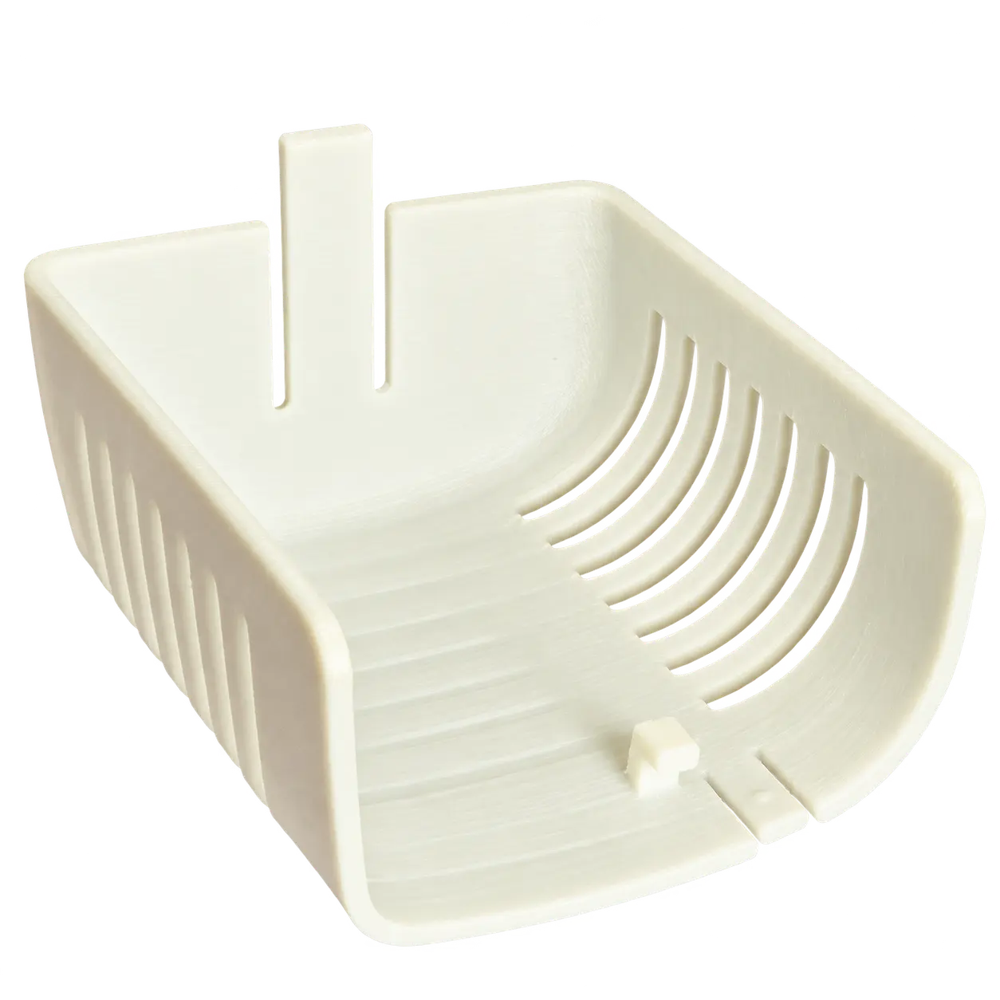

Печать филаментом
FDM-ПЕЧАТЬ
Филамент — пластиковая нить на катушке. Материал расплавляется и послойно формирует деталь.
ABS · PETG · PLA · PA · PETG-CF · TPU

- Достоинства
- Прочность · размеры · выбор материалов
- Особенности
- Видимость слоёв · меньшая проработка мелких элементов